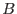
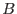

The active time at each angular bin is the sum over frames of the active time contributions from all CCD pixels, within the node-specific telemetry window, which overlap the surface of the bin. Note that the chip coordinate system is related to the angular coordinate system through a fairly complicated transformation, which changes from frame to frame as the satellite drifts. A normal pixel contributes active time to a bin in proportion to its overlap, which naturally varies by frame. The active time, per frame, of a normal pixel is the full frame integration time multiplied by the node-specific fractional exposure; bad pixels contribute no active time. A pixel is normal if it can be used to detect x-rays. The on-board Data Preprocessor (DPP) should usually know the locations of all the hot pixels, but when a pixel it considers normal contains too much energy the DPP is configured to suppress it from the telemetry, effectively rendering the pixel bad. Since the active time lost this way cannot be assigned directly to the responsible pixels, it is simply deducted, proportionately, from every pixel (not including uplinked bad pixels) in the node via the fractional exposure calculated by rgsframes. For HTR mode data there are no such lost pixels, and accordingly no fractional exposure correction.
The REJFLAGS attribute selects which pixels are to be considered bad, either in particular frames or in every frame. The REJPIXnn tables record, by frame, the position of every pixel that might qualify as bad and is not redundant with the BADPIXnn tables. Filtering on ON_BADPIX sets all pixels listed in the BADPIXnn table bad in every frame, and filtering on NEXT_TO_BADPIX sets all pixels directly adjacent to these bad in every frame as well. Filtering on ON_WINDOW_BORDER sets all pixels at the edge of the telemetered window bad in every frame (in HTR mode only the vertical edges are marked bad). Filtering on ON_NODE_INTERFACE sets all pixels on either side of the trans-node boundary bad in every frame. These pixels tend to collect spurious events because the DPP does not perform event reconstruction across the trans-node boundary, and may suppress only part of a saturated event that crosses the boundary. Bad events (principally cosmic ray strikes) can render otherwise normal pixels bad on a frame-by-frame basis, in the sense that x-ray photons couldn't be detected there in that frame. Filtering on BAD_SHAPE sets all pixels associated with a bad event of this type bad in the frame where it occurs. But filtering on BELOW_ACCEPTANCE, which indicates a non-x-ray event on pixels that would have registered an x-ray if exposed to one, has no effect on the exposure map. If an event is rejected for this reason only, then its pixels remain normal in the exposure map. Note that due to the arbitrary alignment between the CCD grid and the angular grid, pixels marked bad in every frame tend to appear as dips rather than as holes in the exposure map.
The node-specific exposure maps are constructed on a sub-space of the
two-dimensional channel space established by rgsangles
for the
event coordinates (BETA_CHANNEL or MLAMBDA_CHANNEL
and XDSP_CHANNEL). Each pixel in the exposure map covers
the same angular region as a corresponding pixel in the event channel
space, when using BETA_CHANNEL calculations, but to
minimize file size a node-specific exposure map covers only the
exposed surface of its node. The FITS standard World Coordinate
System (WCS) keywords are present in both the event coordinate
columns and the exposure maps, and can be used to place events onto
the node-specific sub-space. The following equations relate the
various coordinate systems.  (dispersion) and
(dispersion) and  (cross-dispersion) are exposure map coordinates, with integer values
referring to the midpoint of a channel. Following FITS convention,
the first element of the map array is labeled (1,1).
(BETA_CORR) or (LAMBDA) and
(cross-dispersion) are exposure map coordinates, with integer values
referring to the midpoint of a channel. Following FITS convention,
the first element of the map array is labeled (1,1).
(BETA_CORR) or (LAMBDA) and  (XDSP_CORR) are
aspect-corrected RGS angular coordinates. 
(BETA_CHANNEL) and
(XDSP_CORR) are
aspect-corrected RGS angular coordinates. 
(BETA_CHANNEL) and  (XDSP_CHANNEL) are event
coordinates, or when used as subscripts on WCS attributes, refer to
those respective columns; all other WCS attributes refer to the
exposure map. Note also that
and
.
(XDSP_CHANNEL) are event
coordinates, or when used as subscripts on WCS attributes, refer to
those respective columns; all other WCS attributes refer to the
exposure map. Note also that
and
.

The parameters of the linear transformation from map coordinates to chip coordinates are attributes of the exposure maps. The actual transformation is not linear, but this approximation is good to a fraction of a CCD pixel within the limits of the map. Further, because these parameters describe the average aspect correction, coordinates at the edges of the map may transform to outside the limits of the node.